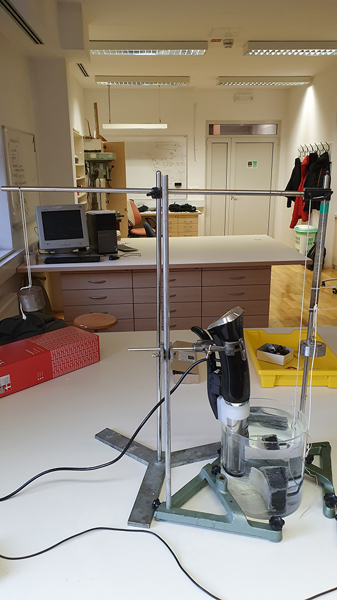
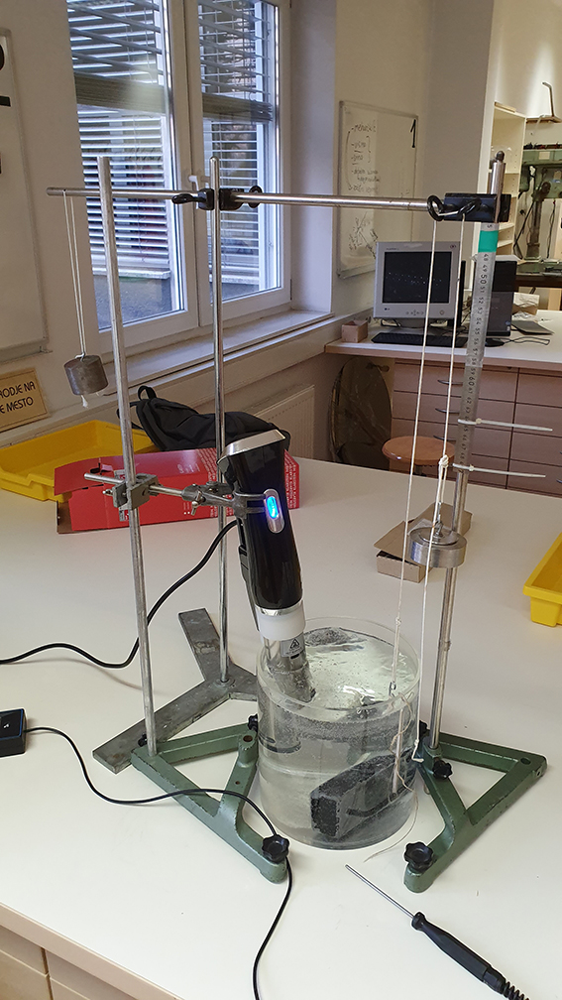
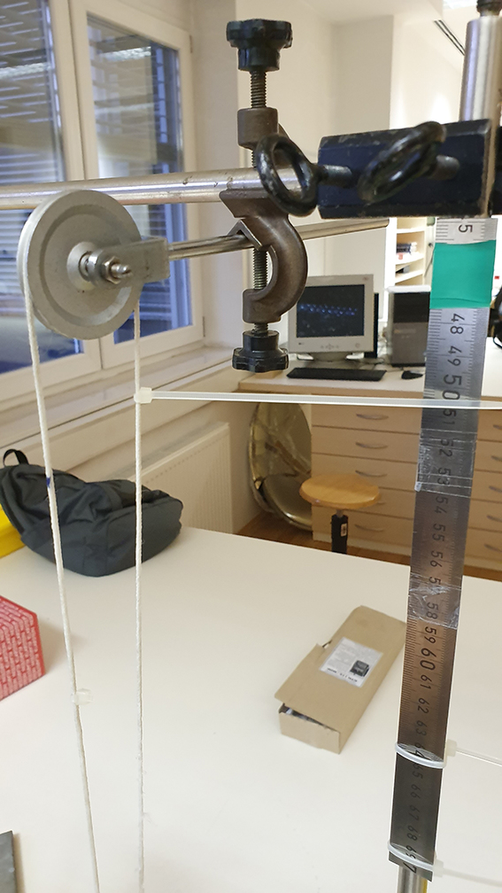
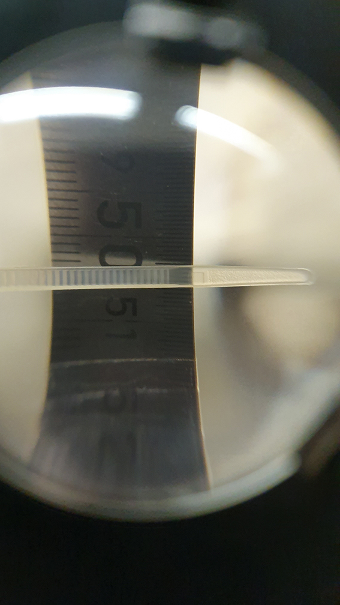
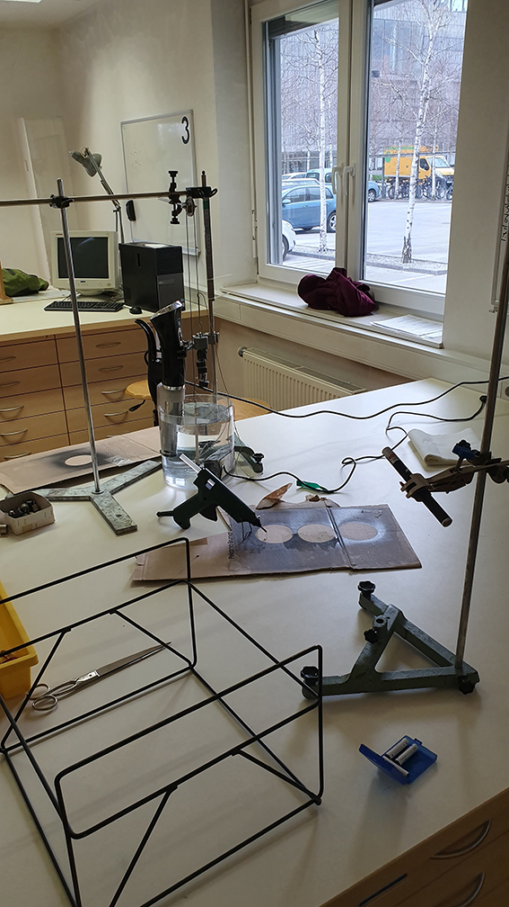
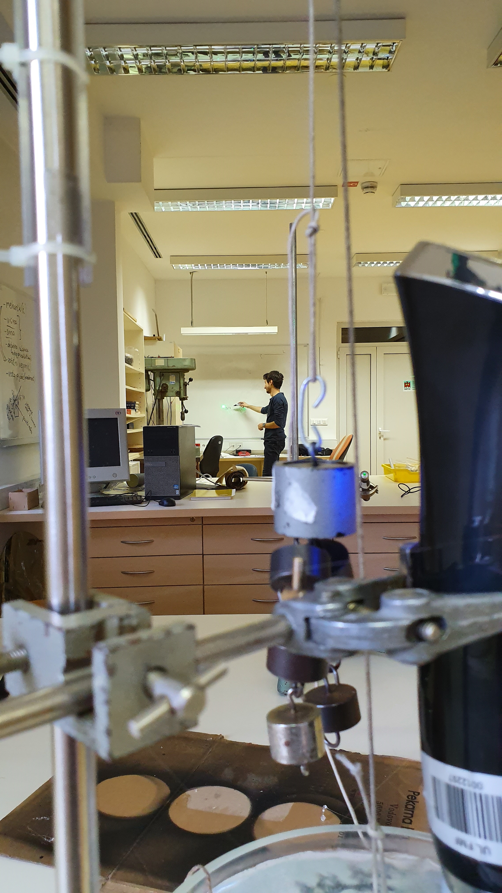
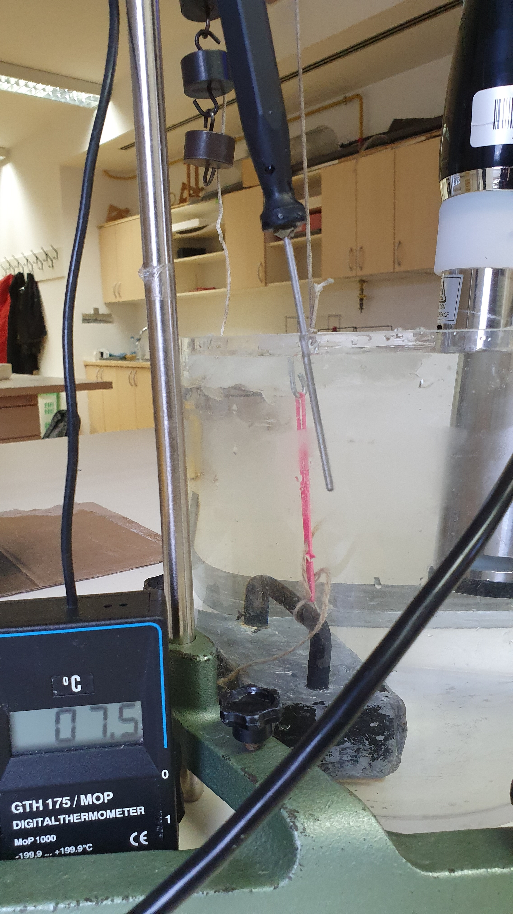

Eksperiment
Najprej smo razmišlili, kako bi se sploh lotili problema, kjer so bile ovire konstantna toplota, natančno merjenje deformacije elastike in omejenost prostora. Nato smo zasnovali rešitev postavitve poskusa:


Različni eksperimentalne razmere
Temperatura
Največji dosežen temperaturni razpon je bil približno 278K do 363K.
Potopljenost
Elastika je bila popolnoma potopljena pod vodo.
Ohranjanje temperature
Za ohranjanje temperature smo uporabili kuhalnik.
Laser
Za ojačitev meritve smo uporabili 3mW zeleni laser, ki nam ga je posodil asistent, za kar se mu zahvaljujemo.
Poskusi
1. skupina poskusov
Prva skupina poskusov je zajemala več iteracij enake postavitve; poskusili smo izničiti veliko omejitev.
Trenje
Najprej smo podcenjevali učinek trenja, ki je bil močen do te mere, da se vrvica sploh ni premikala, ali pa se je trajno premaknila; to smo odstranili z uporabo škripca, ki smo ga tudi temeljito preizkusili.
Načini merjenja in odčitavanje rezultatov
Kmalu je bilo jasno, da so dejanski premiki izredno majhni in da bomo morali povečati red velikosti meritve. Sprva smo vendarle poskusili različne načine odčitavanja, kot plošča, vezica in lupa.


2. poskus
Drugi poskus je bil opremljen z veliko bolj natančnim na£inom merjenja; meritev smo ojačili z laserjem in jo s pomočjo zrcala projecirali na tablo. Zelo smo tudi znižali temperaturo. Uporabili smo tudi škripec, ki nam je omogočil zanemariti efekt trenja. Tukaj smo uporabili že deformirano elastiko (pregreto in raztegnjeno).


3. poskus
V tretjem poskusu smo zamenjali vrsto elastike, ki ni bila predhodno deformirana in raztegnjena.
